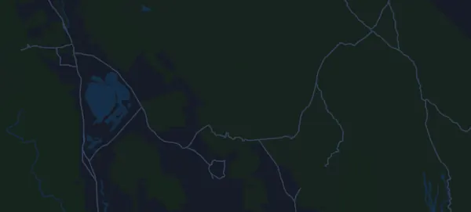

Badwater 135 217 km
- Distanz
- 217 km
- Höhenmeter
- ↑ 4.609 m
- Höchster Punkt
- 2.543 m ü. M.
- Untergrund
- Straße
- Profil
- Hügelig
- Start
- 20:00 Uhr
Höhenprofil
Mit Mila vorbereiten
Mila ist eine Lauf-Coach-App. Nimmst du einen Lauf in deinen Plan auf, plant der Coach deine Wochen bis zum Start nach deiner Form und gibt dir eine Zielzeitprognose und einen Plan für Tempo, Getränke und Verpflegung auf der Strecke.

Der richtige Lauf am richtigen Tag.
Die Strecke

Über die Strecke
Badwater 135 ist ein Straßenlauf in Badwater Basin, Death Valley, Vereinigte Staaten, über 217 km. Die Strecke hat insgesamt 4.609 Höhenmeter bergauf und 1.989 bergab, 21 m pro km, und ist damit hügelig. Der höchste Punkt liegt auf 2.543 m ü. M., der tiefste auf -78 m.
Der größte Anstieg beginnt bei km 64,6: 1.510 Höhenmeter auf 30 km mit durchschnittlich 5,0 % Steigung, bis auf 1.510 m. Insgesamt hat die Strecke 14 Anstiege ab 25 Höhenmetern; der letzte beginnt bei km 188,9.
In der Mila-App beschreibt der Coach die Strecke ausführlich in deiner Sprache und plant dein Pacing und deine Verpflegung dafür.
Anstiege
| Beginnt bei | Länge | Höhenmeter | Steigung | Gipfel (m ü. M.) |
|---|---|---|---|---|
| km 14,2 | 3,1 km | 31 m | 1,0 % | -24 |
| km 19,5 | 2,7 km | 25 m | 0,9 % | -52 |
| km 22,3 | 4,1 km | 55 m | 1,3 % | 2 |
| km 29,8 | 1,9 km | 25 m | 1,3 % | -41 |
| km 36,5 | 18,9 km | 112 m | 0,6 % | 47 |
| km 58,4 | 6 km | 26 m | 0,4 % | 2 |
| km 64,6 | 30 km | 1.510 m | 5,0 % | 1.510 |
| km 108,9 | 11,6 km | 297 m | 2,6 % | 792 |
| km 120,5 | 6,4 km | 361 m | 5,6 % | 1.153 |
| km 127,0 | 6,7 km | 284 m | 4,2 % | 1.430 |
| km 133,8 | 2,8 km | 61 m | 2,2 % | 1.491 |
| km 138,3 | 7,4 km | 119 m | 1,6 % | 1.604 |
| km 171,3 | 6 km | 26 m | 0,4 % | 1.140 |
| km 188,9 | 28,1 km | 1.438 m | 5,1 % | 2.543 |
Vor dem Start
Startzeiten
- 20:00 Uhr
Quelle: badwater.com, abgerufen am 15. Oktober 2026
Häufige Fragen
Wann findet Badwater 135 217 km statt?
Badwater 135 217 km findet am Montag, 19. Juli 2027 statt. Prüfe Datum und Startzeit beim Veranstalter.
Wann ist der Start bei Badwater 135 217 km?
Laut Veranstalter: 20:00 Uhr.
Wie lang ist Badwater 135 217 km und wie viele Höhenmeter hat die Strecke?
Der Lauf ist 217 km lang mit 4.609 Höhenmetern bergauf und 1.989 bergab. Der höchste Punkt liegt auf 2.543 m ü. M.
Wie ist die Strecke von Badwater 135 217 km?
Die Strecke ist hügelig, mit durchschnittlich 21 Höhenmetern pro km. Sie hat 14 Anstiege ab 25 Höhenmetern; der größte beginnt bei km 64,6: 1.510 Höhenmeter auf 30 km. Sie führt vom Start zu einem Ziel an einem anderen Ort. Der Untergrund ist Straße.
Wie teile ich mir Badwater 135 217 km ein?
Lauf eher mit gleichmäßiger Anstrengung als mit gleichmäßigem Tempo: Lass das Tempo an den Anstiegen sinken, hol es zurück, wo es flacher wird, und halte dich auf den ersten Kilometern zurück. Die größten Anstiege beginnen bei km 64,6, km 108,9, km 120,5 und km 188,9. In Mila bekommst du einen Pace-Plan für genau diese Strecke, passend zu deiner Form.
Ähnliche Läufe
Weitere Läufe in der Nähe
- Speedgoat Mountain Races by UTMB – 50K24. Juli 2027 · Snowbird, Vereinigte Staaten
- Hardrock Hundred Mile Endurance Run (Hardrock 100) 161 km9. Juli 2027 · Silverton, Colorado, Vereinigte Staaten
- Western States 100-Mile Endurance Run 161 km26. Juni 2027 · Olympic Valley, Vereinigte Staaten
- Falmouth Road Race 11,3 km15. August 2027 · Woods Hole, Falmouth, Vereinigte Staaten
- Leadville Trail 100 Run 160,5 km21. August 2027 · Leadville, Colorado, Vereinigte Staaten
- BOLDERBoulder 10K31. Mai 2027 · Boulder, Colorado, Vereinigte Staaten
Mit Mila vorbereiten
Der richtige Lauf am richtigen Tag.
Die Angaben stammen aus der Streckendatei und den Informationen des Veranstalters. Prüfe Datum, Startzeiten und Regeln beim Veranstalter.
Mila ist nicht mit dem Veranstalter oder den Sponsoren des Laufs verbunden und wird von ihnen weder gesponsert noch empfohlen. Namen und Marken gehören ihren Inhabern. Veranstalter oder Rechteinhaber? Änderung oder Entfernung beantragen